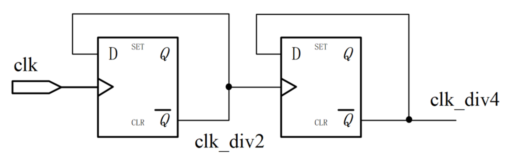
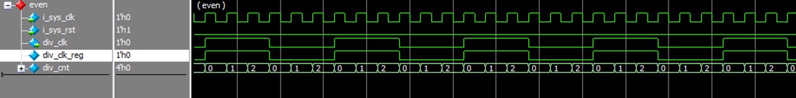
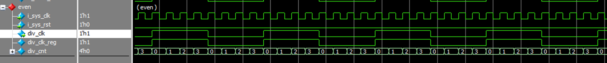
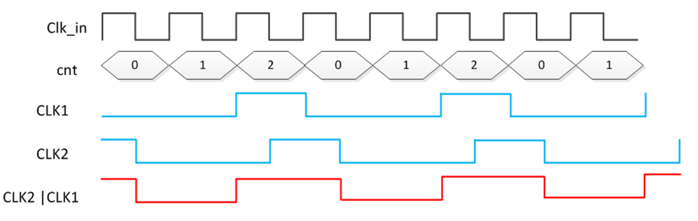
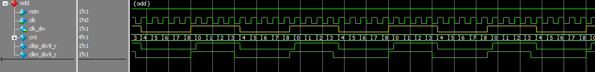
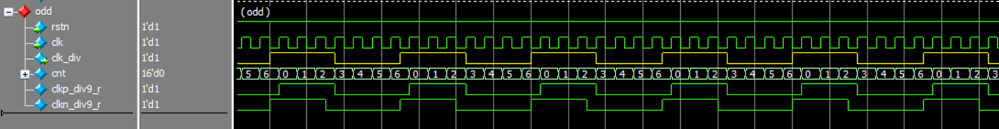
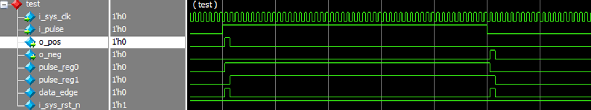

分频器和呼吸灯的实现原理类似：都是调整信号占空比的问题
分频器实现原理
分频器是指使输出信号频率为输入信号频率整数分之一的电子电路。在许多电子设备中如电子钟、频率合成器等，需要各种不同频率的信号协同工作，常用的方法是以稳定度高的晶体振荡器为主振源，通过变换得到所需要的各种频率成分，分频器是一种主要变换手段。早期的分频器多为正弦分频器，随着数字集成电路的发展，脉冲分频器（又称数字分频器）逐渐取代了正弦分频器。采用触发器反向输出端连接到输入端的方式，可构成简单的 2 分频电路。以此为基础进行级联，可构成 4 分频，8 分频电路。电路实现如下图所示，用 Verilog 描述时只需使用简单的取反逻辑即可。
偶数分频
实现
只使用一个计数器，通过计数在分频后的前半个周期和后半个周期电平取反之后就得到了一个偶数分频模块，偶数分频模块代码可以在其他工程中复用。
为什么是 (NUM_DIV/2-1)？
分周期计数：对于N分频（N为偶数），输出时钟的一个完整周期对应输入时钟的N个周期。由于输出时钟是方波，高电平和低电平各占N/2个输入时钟周期。
计数器范围：计数器需要从0计数到(N/2 - 1)，总共N/2个状态
当计数器等于(N/2 - 1)时，表示已经过去了N/2个输入时钟周期，此时需要翻转输出时钟，并重置计数器。
波形图
偶数分频代码仿真观察波形，下图时偶数分频100MHZ时钟经过六分频之后的时钟，可以看到分频之后的时钟周期是60ns的时钟周期，达到六分频的效果。 
将偶数分频模块的分频参数修改为8，可以看到8分频的效果，时钟周期为80ns，完成8分频的功能 
奇数分频
实现
奇数分频则可以利用源时钟双边沿特性并采用”与操作”或”或操作”的方式将分频时钟占空比调整到 50%。
采用”或操作”产生占空比为 50% 的 3 分频时序图如下所示。
- 利用源时钟上升沿分频出高电平为 1 个 cycle、低电平为 2 个 cycle 的 3 分频时钟。
- 利用源时钟下降沿分频出高电平为 1 个 cycle、低电平为 2 个 cycle 的 3 分频时钟。
- 两个 3 分频时钟应该在计数器相同数值、不同边沿下产生，相位差为半个时钟周期。然后将 2 个时钟进行”或操作”，便可以得到占空比为 50% 的 3 分频时钟。

波形图
奇数分频代码仿真图，下图时100MHZ时钟九分频，clk_div是最终分频得到的九分频时钟，通过在上升沿和下降沿分别得到的时钟  
修改奇数分频代码中的任意分频参数之后，修改为七分频，下图仿真波形是七分频时钟的波形。
边沿检测
是数字电路设计中常用的方法之一。其基本原理是通过触发器检测输入信号的状态变化，并触发相应的逻辑操作。
边沿检测的方法都很不相同，可以用打两拍实现，也可以用移位寄存器实现，还有的打三拍，用到的地方也很多，检测脉冲，检测SPI接口的时钟上升沿和下降沿，按键消抖等等都会用到。
波形图
使用modelsim仿真得到的波形图，从下图可以看出外部输入的脉冲信号，在输入时，程序检测到上升沿信号，o_pos信号拉高，在脉冲信号结束时程序检测到下降沿信号，o_neg信号拉高，可以正确的检测到边沿信号，完成边沿检测的程序仿真。 
Appendix
偶分频器
1 | module clk_even_div#( |
奇分频器
1 | //在上升沿产生9分频 |
边沿检测
1 | //将输入边沿信号打两拍 |